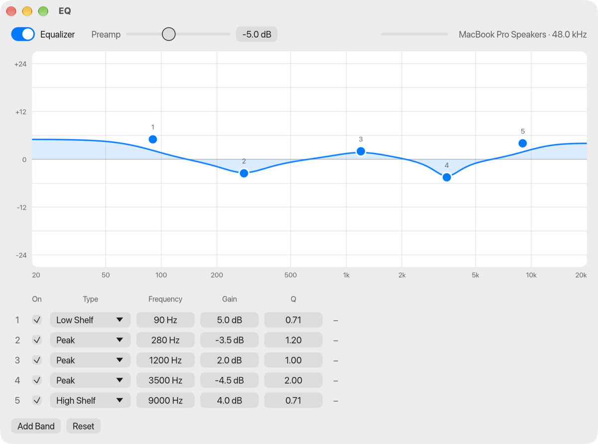
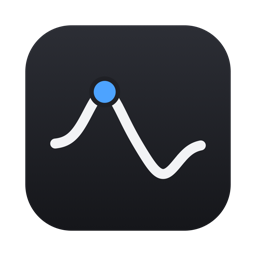

EQ for macOSA free system-wide parametric equalizer for every sound your Mac plays. No audio driver, no kernel extension, no account. Drag points on a frequency-response curve and hear the change at once.
- Rust
- egui
- Core Audio process taps
- DSP
- Apple silicon + Intel